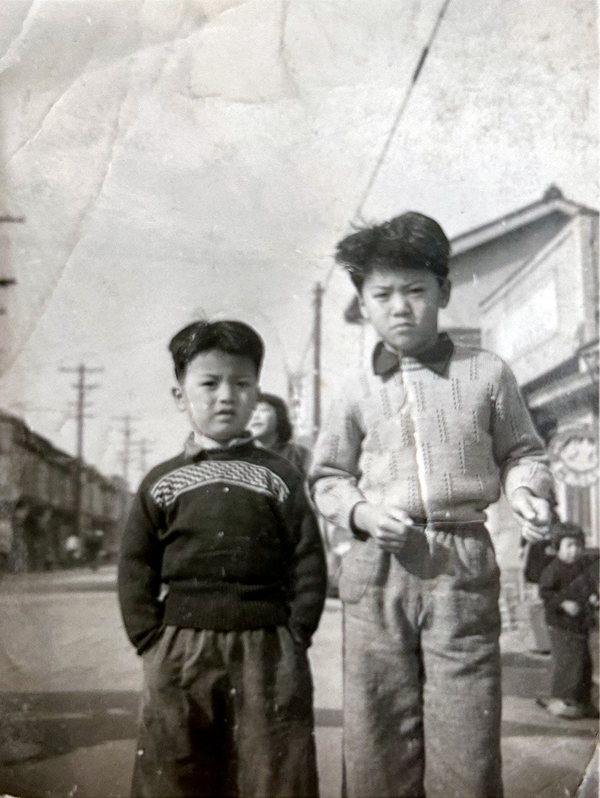
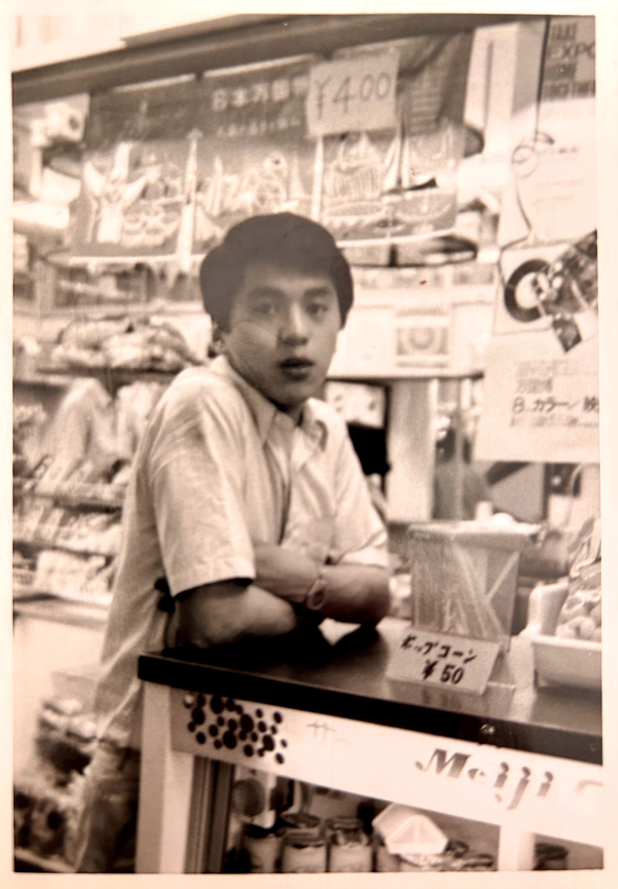
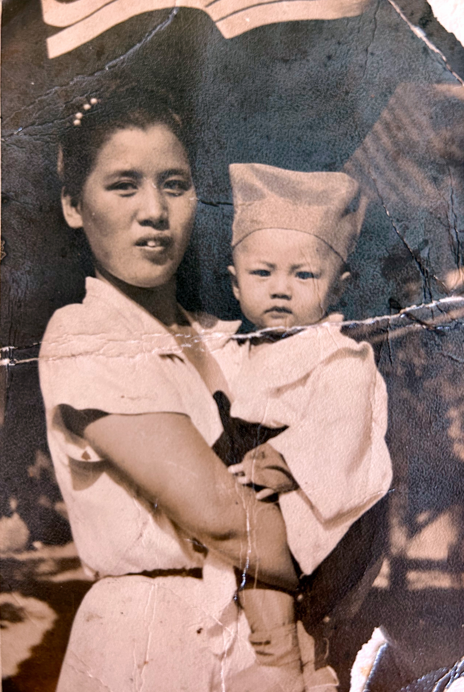

Photographs
Three photographs spanning the postwar decades: two boys on a postwar Kansai street; a young man at work during the 1970 Osaka World's Fair; a woman with her newborn son. These images carry what the koseki cannot — faces, clothing, weather, the texture of everyday life in the moments the registers only note as dates and place names.
Teruhiro and Kazuhide: Postwar childhood

Teruhiro (left, approximately 7 or 8 years old) and Kazuhide (right, approximately 4 or 5 years old) stand on a street in postwar Kansai — likely in the Imazato district of Osaka where their parents kept the shoemaker's shop, or possibly in Nara during a visit to the old family seat at Hayashikōji-chō. The clothing — hand-knitted sweater with geometric pattern, simple cotton trousers — speaks to the immediate postwar years when such garments were carefully made at home. The wooden utility poles behind them and the modest buildings on either side mark the working-class neighborhoods where the family lived.
The photograph captures a moment between Keinosuke's return from Manchukuo and the family's later moves. Teruhiro is already the boy who will, within a decade, work at Expo '70 to fund his crossing into the West. Kazuhide is the brother who will remain in Japan, anchoring the family through the postwar decades until his own move to Bangkok.
Expo '70: A window into work and ambition

A young man — Teruhiro, in his early twenties — works at a vendor stall at Expo '70, the Osaka World's Fair. The photograph captures him in the midst of the work that would fund his departure: he is dressed in a simple white short-sleeved shirt; behind him, merchandise is displayed with price tags (visible at ¥60, ¥40); shelves hold what appear to be packaged goods or souvenirs. The setting has the purposeful bustle of a commercial fair — merchandise, signage, the apparatus of commerce.
This is the pivot moment in his life: the work at Expo '70, as he would later tell his son, was not the destination but the means. Every yen saved here was directed toward a single goal — a ticket west. Within a few years of this photograph, he would board the Trans-Siberian Railway, arrive at Helsinki, study art in Paris, keep house in London, and settle in Finland. The work visible in this image is the material foundation of that crossing.
Toshie with newborn Teruhiro

Toshie, cradling the newborn Teruhiro. This hand-tinted or early color photograph was taken in the days after his birth — likely at the Uratani family compound at Ōkubo, where she had returned to give birth in the custom of 里帰り出産 (satogaeri shussan), the expectant mother's return to her own family's home for the birth. Teruhiro was born on 10 February 1948, the same day Keinosuke and Toshie's marriage was officially registered — a compression of events that marks the turmoil of the immediate postwar years, when administrative formalities and family rituals were compressed into urgent practical necessities.
Toshie's expression is serene; her clothing is simple and carefully worn. The infant is swaddled in white cloth — the garments that would stretch across his infancy in postwar Osaka. She would raise this child through the poverty and reconstruction of the 1950s, the economic growth of the 1960s, and into his young adulthood. She would forbid him art school and insist on a practical degree. And fifty-five years later, in July 2003, she would die in an Osaka hospital, knowing that her eldest son had long since crossed Siberia and settled in a country she would never see.